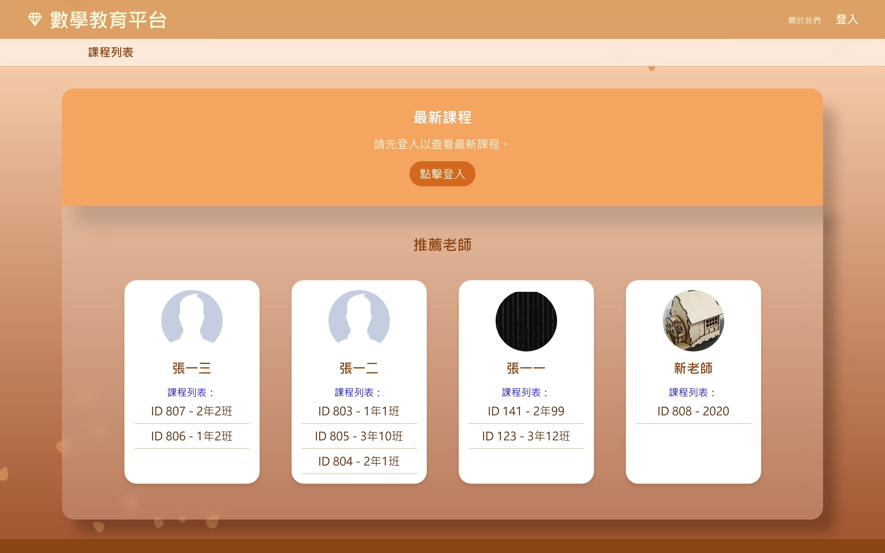
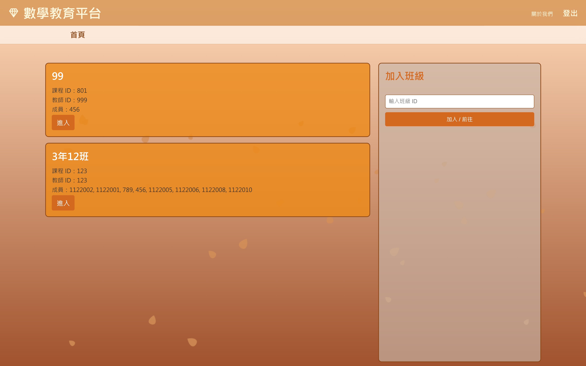
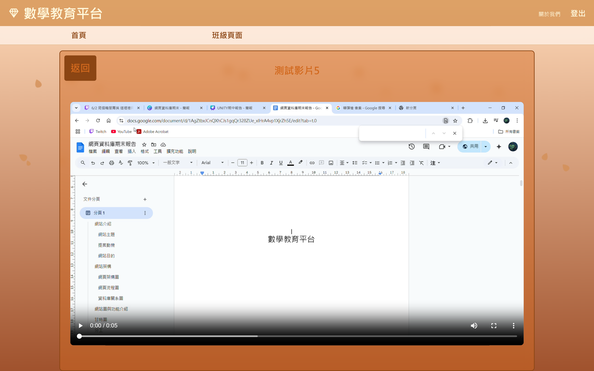
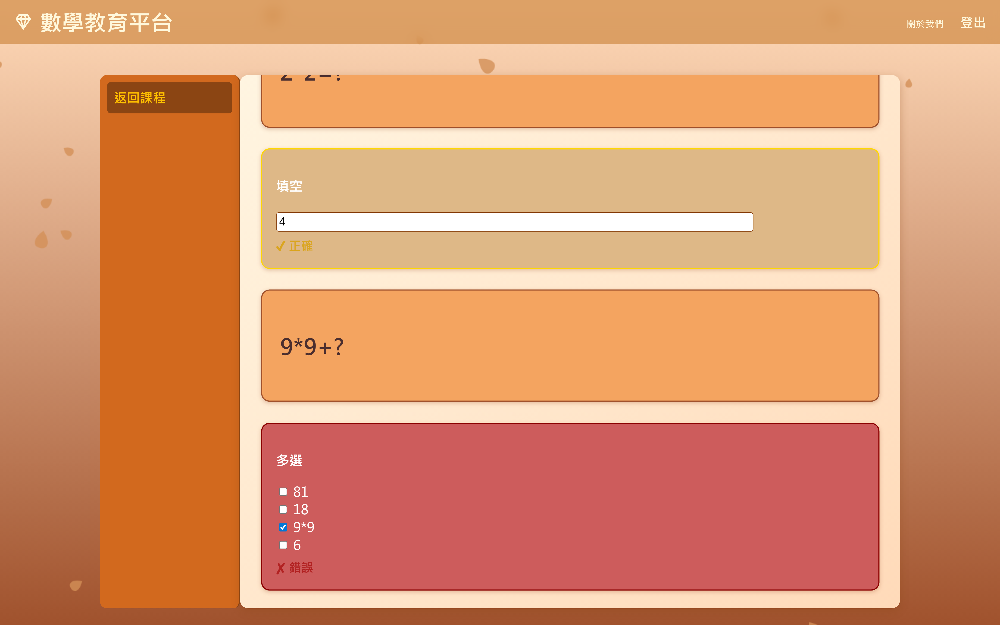
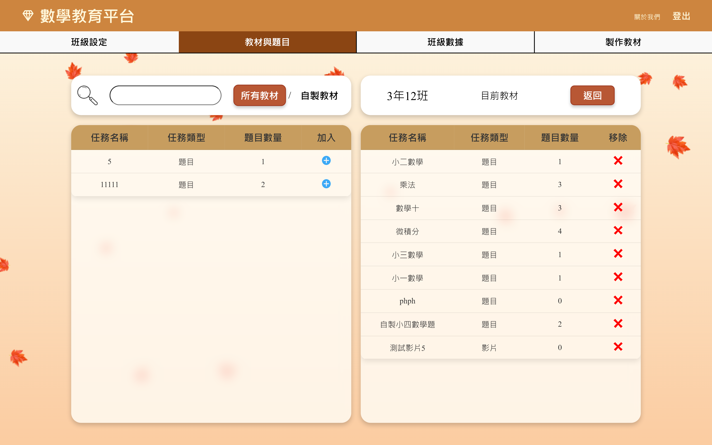
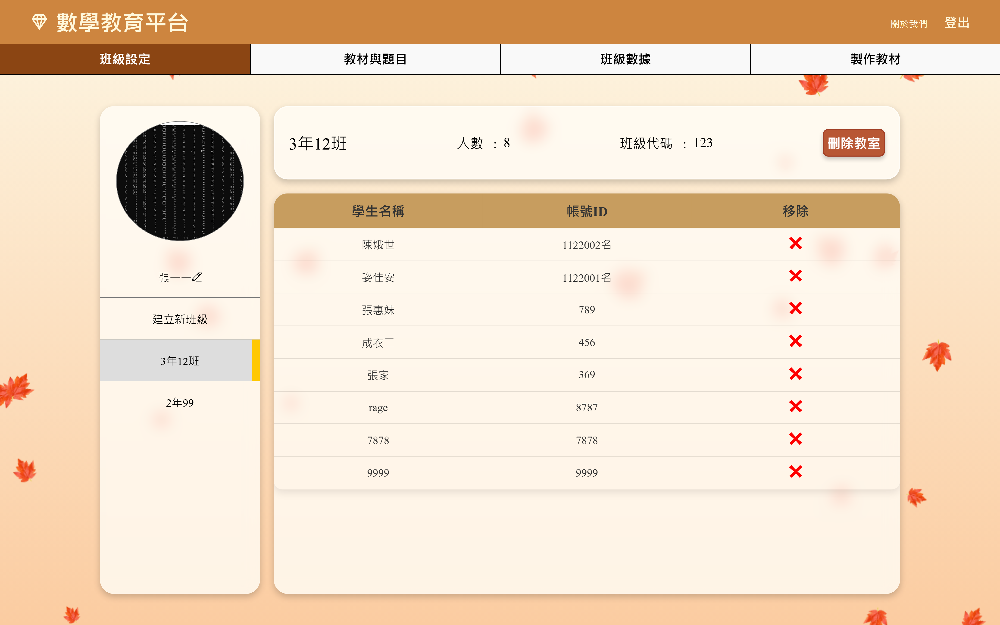
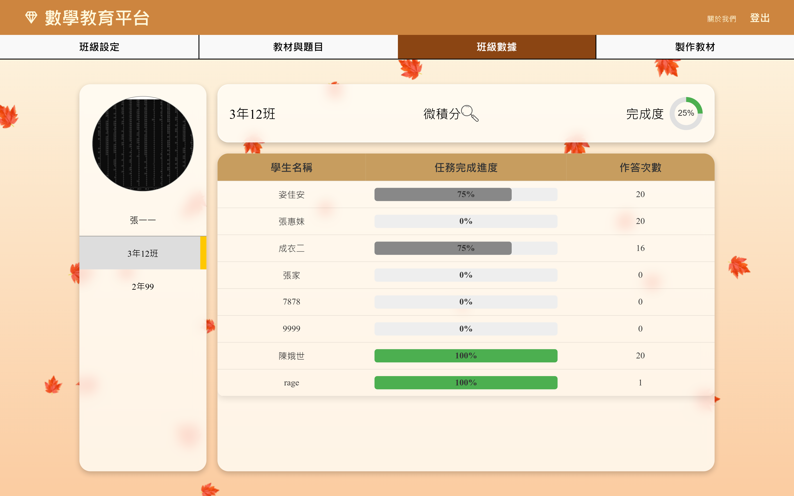
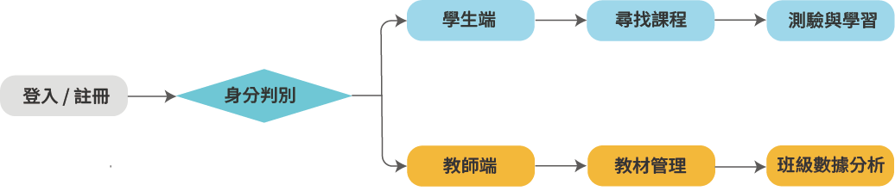

將學生與老師常用入口集中，讓使用者一進站就能判斷下一步。
Web Development
教育平台網頁開發
本作品以教學管理與學生學習流程為核心，整理首頁、班級、教材、影片、題目練習與進度追蹤等頁面。介面設計重視資訊層級、操作路徑與不同角色的使用情境，讓老師能快速管理課程，也讓學生能順暢完成學習任務。







用明確區塊建立頁面節奏，讓平台功能更容易被掃描。
Overview
開發介紹
這個網頁作品聚焦在教育平台的角色分流與任務流程。頁面規劃從首頁入口開始，延伸到學生端的班級查找、影片觀看、題目練習，以及老師端的教材選擇、班級管理與進度查看。
- 整理學生與老師的主要操作入口。
- 建立教材、班級、影片、題目與進度的資訊層級。
- 透過一致的卡片、列表與狀態標籤維持操作節奏。
- 讓桌機畫面保留足夠資訊密度，同時兼顧 RWD 呈現。
Information Architecture
資訊架構圖

Mockup
流程圖
